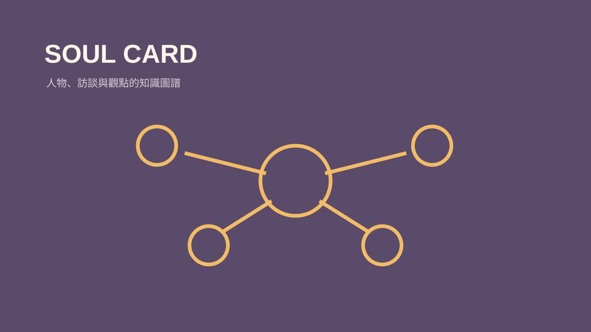

技能包 · 學習工具
人物靈魂卡
2026.08 · 個人專案

FIG. 28 — 產品主畫面
關於這個作品
人物靈魂卡以人物卡、分類 MOC 與訪談紀錄串接一位人物的核心觀點、經歷與金句。流程重視來源可追溯與關聯維護，讓長期累積的人物研究能真正被再次檢索與使用。
作品亮點
建立人物卡與分類 MOC 的知識結構
掛載訪談、摘要與可追溯來源
萃取關鍵觀點並同步至金句庫
避免杜撰人物經歷或沒有來源的敘述